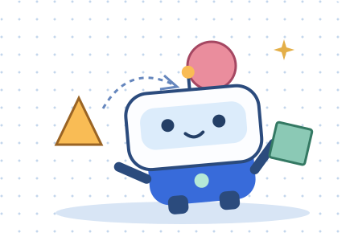

МАТЕМАТИКА · ИГРАЕМ И ДУМАЕМБольшие открытия
Большие открытия
начинаются с тебя!
Привет, исследователь! Здесь фигуры превращаются,
роботы строятся по росту, а ты находишь секреты.

Твоя коллекция открытийПрогресс сохраняется на этом устройстве
0 / 36КАЖДЫЙ УРОК — НОВОЕ ПРИКЛЮЧЕНИЕ
Куда отправимся сегодня?
☀
Здесь можно ошибаться. Попробуй, попроси подсказку и найди свой ответ. У тебя получится!
Урок пройден. Вот это открытие!
Можно отдохнуть или отправиться в следующее приключение.